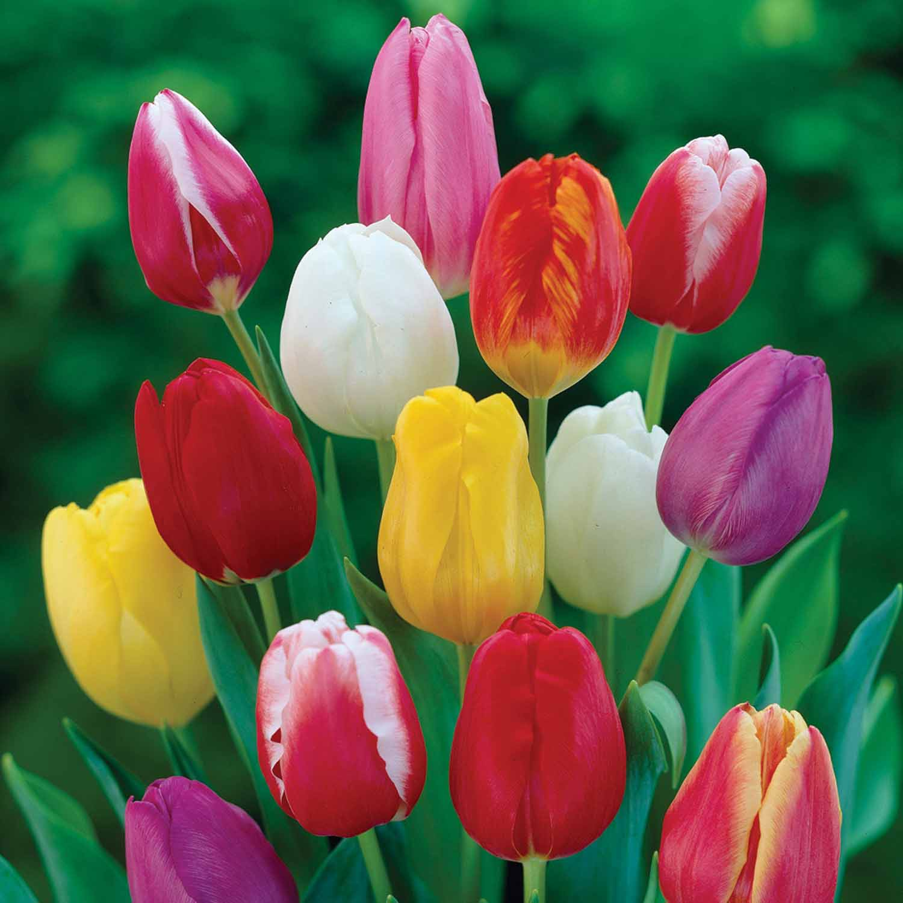

Rose

A rose is a woody perennial flowering plant of the genus Rosa, in the family Rosaceae, or the flower it bears. There are over three hundred species and thousands of cultivars. They form a group of plants that can be erect shrubs, climbing, or trailing, with stems that are often armed with sharp prickles.
Tulip

Tulips form a genus of spring-blooming perennial herbaceous bulbiferous geophytes. The flowers are usually large, showy and brightly coloured, generally red, pink, yellow, or white. They often have a different coloured blotch at the base of the tepals, internally.
Tuberrose
Agave amica, formerly Polianthes tuberosa, the tuberose, is a perennial plant in the family Asparagaceae, subfamily Agavoideae, extracts of which are used as a note in perfumery. Now widely grown as an ornamental plant, the species was originally native to Mexico.